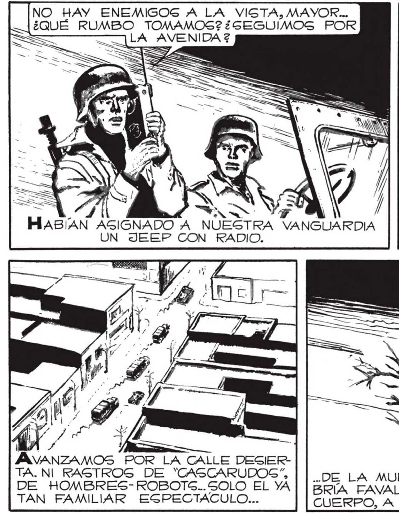

NO HAY ENEMIGOS A LA VISTA, MAYOR... ¿QUÉ RUMBO TOMAMOS? ¿SEGUIMOS POR LA AVENIDA 2 ==> TUERZA A LA DERECHA, POR LA CALLE VICTORINO DE LA PLAZA... ELLOS CALCULARAN QUE NOSOTROS GEGUIREMOSG POR LA AVENIDA DEL BAJO...LOS BURLAREMOS... BIEN, SEÑOR. añ ¡TOMAREMOS POR VICTORINO DE LA PLAZA! OMPRENDÍ AL MAYOR. PREFERÍA AVANZAR POR UNA GALLE ESTRECHA, EVITAR LA AMPLITUD DE LA AVENIDA. EN LA CALLE NOG GENTIRÍAMOS MAS PROTEGIDOS; LAS CASAS SERÍAN REFUGIO Sl ÉRAMOS ACGOMETIDOS... A O HASIAN ASIGNADO A NUESTRA VANGUARDIA UN JEEP CON RADIO. ..DEGDE EL COMIENZO DE LA NEVADA, MOSTRABA LA MENOR SEÑAL DE DEGSCOMPOGICIÓN. NO SÉ CUÁNTAS CUADRAS HICIMOS: NOS ENCONTRAMOS EN LA CALLE MONROE. SIN SEÑALES DEL ENEMIGO. NUEVA CONFERENCIA POR EL TRASMISOR PORTÁTIL... d — JÁAVANZAMOS POR LA CALLE DESIER- TA. NI RASTROS DE '"CAGCARUDOS” || DE LA MUERTE SÚBITA. POR RAZONES QUE QUIZA GA DE HOMBRES- ROBOTS..SOLO EL YA | | BRA FAVALLI O, MAS PROBABLE ALGÚN MANO“ NINGÚN TAN FAMILIAR ESPECTÁCULO... CUERPO, A PESAR DE LOS DÍAS TRANSCURRIDOS... LA ORDEN ES DOBLAR EN LA AVENIDA LIBERTADOR SAN MARTIN... E Ano Es Sua SN INIA AZ £. »S ES Z es a AG -, - e e yA A AZ Es E PA - > , - na o Sl UN GIGANTE ESTUVIE RA BAILANDO! Lo PENSE. SL PERO EN NINGÚN MOMENTO IMAGINÉ ANS Ni e QUE MI PENSAMIENTO COINCIDIRÍA TANTO CON LA REALIDAD... e. SS Y e AIN MAS FuE ENTONCES LA PRIMERA VEZ QUE LO SENTIMOS...
